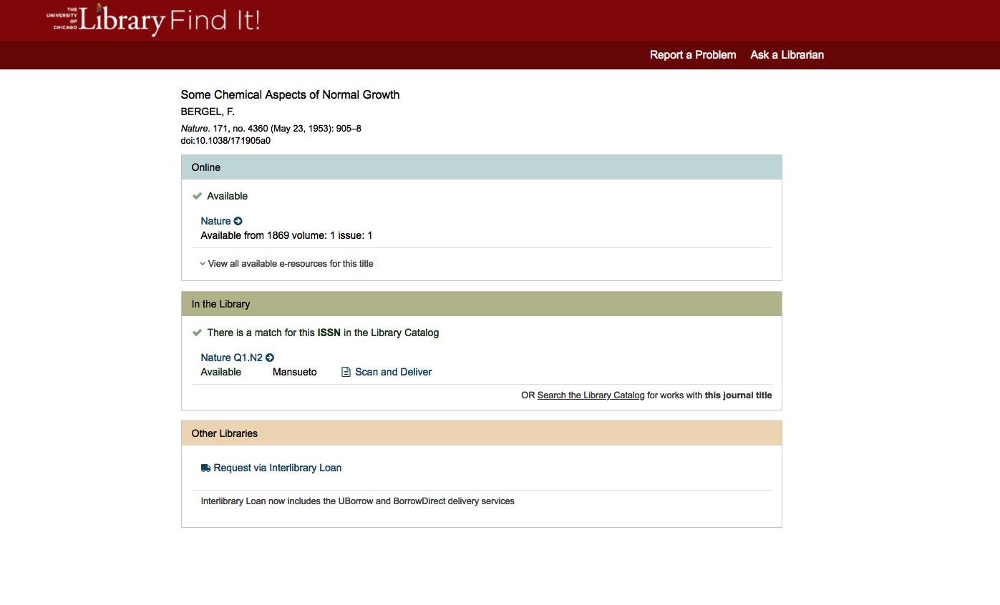

Interface restructuring and integration of various external databases and platforms.
Interlibrary Loan page also shows local copies & e-resourcesCatalog Item Page reuses module color-coding and iconographyInterlibrary Loan Page: BeforeInterlibrary Loan Page: After

Problem
Patrons were having issues determining if the specific copy or volume needed was available in the Library. They often also overlooked any online or ebook version of their items, missing that they could view the material immediately. Online articles were often listed multiple times (due to subscription platforms), complicating which link the patron felt they should choose.
Additionally, the Interlibrary Loan (ILL) page to request an item from another Library forced the patron to choose between our four different ILL services. There was no guarantee that any of the services had their item available for request, creating a arduous and frustration series of tasks.
Solution
Working with the Interlibrary Loan page first, we worked with simplifying how to get the material was displayed. We use three modules to show online access, copies in the Library, and ILL options.
Online resources are deduped so that only the best e-resource link is displayed to the patron, getting rid of choice paralysis.
Local copies of the material are shown in the next module, with Catalog data showing the availability as well as a "Scan & Deliver" link.
Including availability and the "Scan & Deliver" link allows the patron to request a PDF of the item without having to navigate to a new page.
We switched to simply having one "Request from Interlibrary Loan" link rather than making the patron choose. With ILL staff choosing the best service, we were able to favor lending institutions with reciprocal agreements, thus saving the Library money.
If an item is not available in any of the respective mediums, we have help text that allows the patron to search via a global catalog, return to our Catalog, or fill out an ILL request form manually. This assures the ILL page is not a dead end and helps the patron to get the materials they need.
The media module layout, color coding, and iconography used in the ILL page is also used in the Catalog to maintain consistency.
Impact
Patron interviews have shown changed their view of Interlibrary Loan from being a slow and arduous service to one that is quick and seamless.
The data is being displayed closer to how it is stored in the Catalog database, allowing us to remove delicate customizations and speed-up debugging when record-specific errors occur.